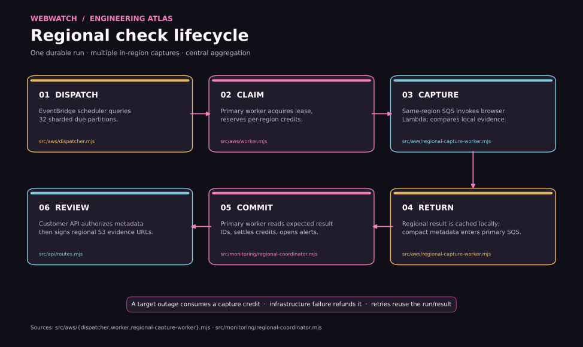

Scheduling
32 sharded due partitions feed the primary check queue. A lease prevents overlapping watcher checks.
Map 02 / transaction lifecycle
A check is claimed centrally, dispatched to selected Regions, compared near its evidence, and committed only after compact results return or the deadline settles missing Regions.

32 sharded due partitions feed the primary check queue. A lease prevents overlapping watcher checks.
Each regional worker writes content-addressed evidence and a replayable run result before sending compact result metadata.
The primary worker aggregates durable per-region results, evaluates alerts, and exposes account-authorized metadata with short-lived evidence URLs.